COMP 243, Fall 2001
Final Course Project Write-up
Vince Scheib, Miguel Otaduy, David O'Brien
TABLE OF CONTENTS
1.0 SYSTEM DESCRIPTION
2.0 SYSTEM STRUCTURE
3.0 SYSTEM AVAILABILITY
/ FAULT TOLERANCE GOALS
4.0 SYSTEM STATE
5.0 DESCRIPTION OF PROTOCOLS
6.0 DESCRIPTION OF PROBLEMS
ENCOUNTERED
1.0 SYSTEM DESCRIPTION
A screen shot of the network game:
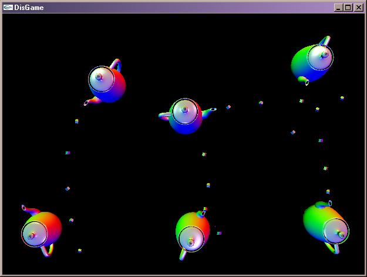
figure 1.
Dueling Teapots is a fault tolerant network
game. It allows several players at different locations to play a
simple teapot battle game in a shared environment. When a player
begins a game, he is presented with a list of possible games to join, or
the option to begin a new game. See figure 2.
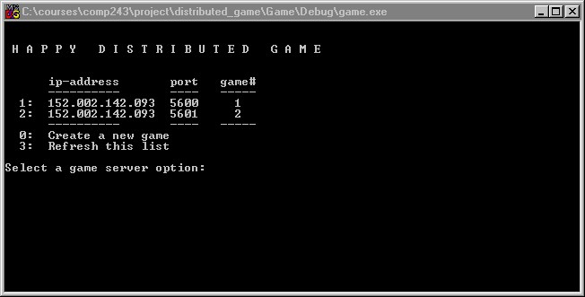
figure 2.
Dueling Teapots is a multi-player distributed
game that allows:
-
Multiple players over a network
-
Reasonable refresh rate with some noticeable
delay
-
Anyone may enter or leave the game at any
time
-
Backup Server automatically takes over when
needed
-
Anyone may be upgraded to server or backup
when needed
-
Uses a well know directory server to determine
current games
-
Server maintains consistent state and duplicates
this data to the backup
-
Cute teapots and flying sugar cubes
2.0 SYSTEM STRUCTURE
Dueling Teapots uses a simple client server
model to maintain consistent game state at all sites. The server
is supplemented by a backup server whose purpose is to take over the server
responsibilities in the event of server failure. During normal operation
of the game, clients send the server updates to their state entered by
the player, such as a change in direction or the firing of a missile.
The server amalgamates these into a game state and rebroadcasts it back
to the clients. Game states are also relayed to the backup server.
There is also a persistent directory server running at a well known location
that is not shown in the figure. It is described in section 2.3.
2.1 Client Server Structure and Implementation
The overall system structure is shown below
in figure 3. The solid lines represent message paths that occur at
fixed intervals during normal operation of the game. The dotted lines
represent messages that are occasionally sent to maintain proper communication
connections when new players join or when components quit or fail.
These are explained in more detail in section 4.
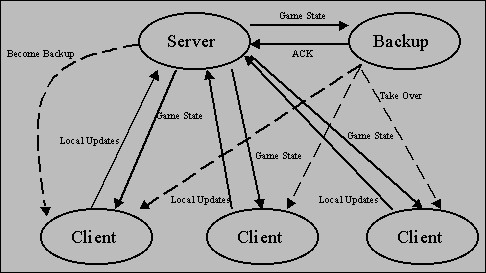
figure 3.
An important design feature of the implementation
is that each player process is divided into three roles: game simulator,
network client, and server. Figure 3 draws these all as separate
objects to more clearly explain the communication channels, but actually
the server and one client are different threads in the same player process.
The same is true for the back server. Every player process has a
running server object that can be in one of four states: IDLE, BACKUP,
ACTIVE_ALONE, ACTIVE_BACKEDUP. This allows any player to become a
backup or primary server when needed by simply passing a message and changing
state. Most of the communication channels needed for a changed of
state will have already been created resulting in faster switches.
Additionally, this was a faster way to implement the network design.
2.2 Starting a New Game
When a player starts a game, he is asked whether
he would like to join an existing game or begin a new game. Information
about current games comes from the Directory Server described below.
When choosing to begin a new game, the process creates a network client
object, a game simulation object and a server object. As this is
the first player, the server begins in ACTIVE SINGLE mode. At this
point in the game, this single player process simulates the game, acts
as the server, and as the sole client. There is no backup server.
When a second player joins, that process
creates a game simulation object, a network client object, and a server
object set to IDLE mode. It's first message to the server is a JOIN
message that is time stamped. The server responded with an ACK message
and a time stamp. The client uses this to do a rough clock synchronization.
The server also uses the JOIN command to add this client to its list of
current players. The detail of this server state are described in
section 4. At this point the server and second client can begin to
exchange state messages. Additionally, the server will now recognize
that there is a new client that can perform backup server duties.
The server will now contact the new client
and send it a command to become a backup server. When the new client
receives this message, it will upgrade its server to BACKUP mode.
The new backup server will begin to accept state updates from the server
and respond with acknowledgments. When the server receives the first
ACK from the new backup, its state changes to ACTIVE BACKEDUP.
Additional clients may know enter the game
by sending JOIN commands to the server. As they join, they are all
added to the servers internal list of players. However, as there
will already be a backup server running, these additional clients will
leave the server objects in IDLE mode.
2.2 Directory server
When a new player joins a game, it can proceed
in two ways: it can either create a new game, or add itself to an existing
game.
The directory server manages the database
of existing games. Its IP address and port are known by all the players,
so that requests can be passed. It has a listening socket where it accepts
requests from the players. There are 3 different requests:
- Add a game server: a player decides
to create a new game, starts a game server, and reports this information
to the directory server. The directory server assigns a game ID to this
game. A socket remains open between the player and the directory server.
The directory will send periodic update queries to the player through this
socket, to check if that particular game is still running.
- Request the existing game servers:
the player decides to join an existing game, so it requests the list of
game servers to the directory. This responds with the IP addresses and
ports of the existing game servers.
- Change a game server: if a backup
server takes over, it will notify the directory server of this fact. The
directory server needs to update the IP address and port of the main server
for that particular game.
Players communicate with the directory
server using a directory client object that makes this communication completely
transparent for the player.
Below we show a diagram of the communication
between the directory server and the players.
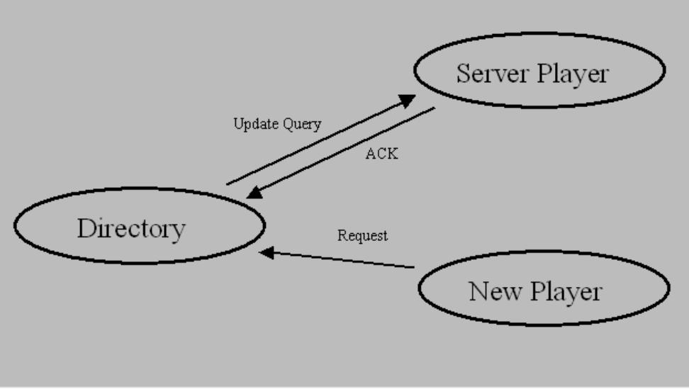
figure 4.
2.3 Thread structure of player process
Each player has these main entities in the
process:
- Game application: carries out
the visualization, handles input from the user, produces local state updates
and reads global state from the game client.
- Game client: works as an interface
between the game application and the server.
- Game server: every process runs
a game server that can potentially update the state of the game and report
it to all the clients. A game server can be in 3 different states: main
server, backup server, or idle. It will actually carry out all the tasks
that it has been created for only in the event of becoming a main server.
- Directory client: if the player
is not a main server, it simply remains idle until there is a specific
request. However, if the player is a main server, communicates periodically
with the directory server to notify that the game is alive.
Here we show the threads that might be
running on the player process, associated to the different entities.
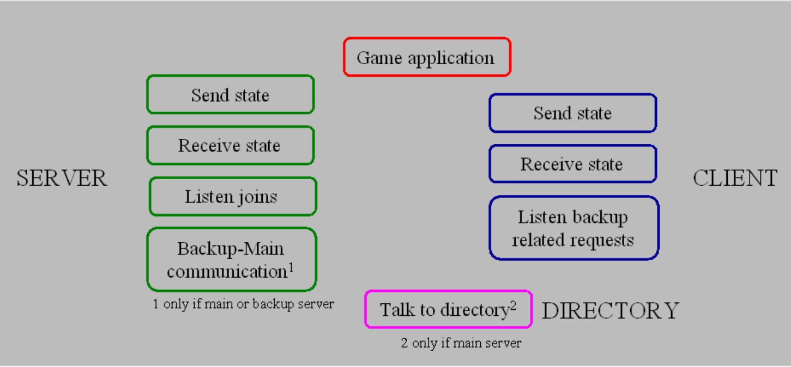
figure 5.
3.0 SYSTEM AVAILABILITY
/ FAULT TOLERANCE GOALS
Dueling teapots is able to recover from the
failure of any single component in the system. Recovery from multiple
component failure is possible as long as both primary server and backup
server do not fail simultaneously. The failures that the system can
recover from are described below.
3.1 Failure of a Client
The failure of any individual client is handled
by a simple time-out. Each client normally sends local state changes
to the server at regular intervals. When the server has missed a
set number of updates from a specific client, the server decides that that
client has left the game. The server then stops sending that client
game state updates and removes its record from the total game state.
Additionally, if the server at any point is unable to write to the socket
connecting to any client, the server closes that connection and removes
that client from its record of the total game state.
At this point all other clients will still
receive game state updates from the server, but these will not include
information for failed client. These running clients will stop simulating
and displaying the failed client's teapot.
If the client had actually not failed or
quit the game, but instead simply lost network connect to the server, the
server will follow the above protocol and still remove the client from
the game. The client will continue to run in isolation. Eventually,
it will also reach a time-out due to lack of server updates. At the
point, a message is displayed informing the player that the client has
most likely lost connection to the server and that the player should exit
the game. If the connection is later restored, the player will still
have to quit and rejoin the game. A protocol to allow the player
to rejoin after time-out have served was not implemented. As this
is only a simple game, such recovery protocol was to deemed crucial.
3.2 Failure of Backup Server
In normal operation of the distributed game,
the server exchanges game state updates with clients and sends game state
updates to the backup server. The backup server sends a brief acknowledgment
to each update it gets from the server. This is shown in figure 6.
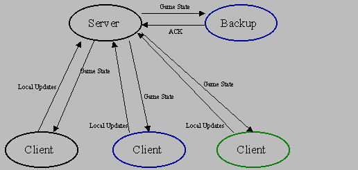
figure 6.
When the back up server fails, communication
between the server and backup is interrupted and the server will either
time-out waiting for backup acknowledgments or assume the backup has failed
when it can not write to the socket connecting it to the backup.
See figure 7.
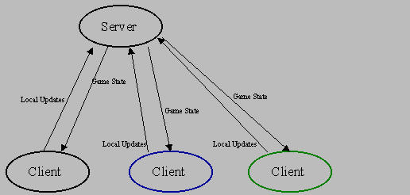
figure 7.
When the server determines that there is
no active backup server, it will attempt to contact one of the remaining
clients to instruct it to begin backup server responsibilities. The
server is careful to avoid picking either an unresponsive client or itself
to upgrade to backup. The server maintains an ordered list of active
clients and cycles through them to pick a new backup. If one client
does not respond to the request, the server will try the next one in sequence
until one responds accepting backup duties. If at a later time this
backup leaves the game and the server must again pick a new backup, the
server will continue from the point it left off in the list sequence.
This will increase the chances that the server will consider all clients
for upgrade and decrease the chances that the server will repeatedly ask
an unresponsive client. This process is shown in figure 8.
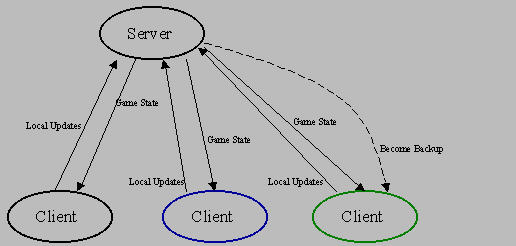
figure 8.
When a client receives a request to become
backup, it must create a backup server. Because each player process
is created with both a client and server thread, the client thread simply
must upgrade its server thread status from IDLE to BACKUP.
This brings the server thread to life and begins its processing, as in
figure 9.
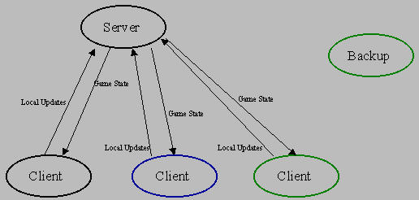
figure 9.
When the new backup thread begins processing,
it immediately sends an acknowledgment to the primary server. At
the point the primary and new backup server begins exchanging messages,
as in figure 10.
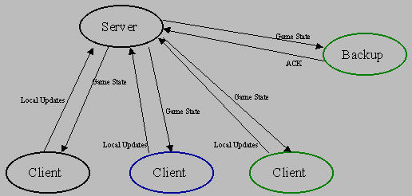
figure 10.
3.3 Failure of Primary Server
We start with the same normal operation state
as described in section 3.2. Figure 11 shows this normal game communication.
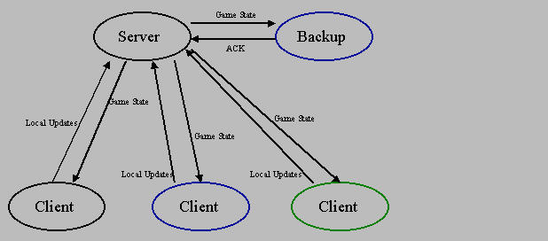
figure 11.
When the server fails, the clients and
the backup stop receiving game state messages, but continue to try to reach
the server. See figure 12.
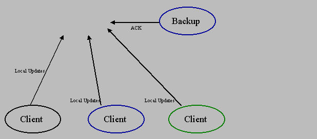
figure 12.
The backup server will time-out waiting
for a state update from the client or will assume that the server has died
when it can not write an acknowledgment to the socket connecting it to
the server. Part of the state the server maintains is the IP address
and port of a listening socket at each client. The backup uses these
to send a message to each client telling them that it is now assuming the
role of the primary server, as in figure 13.
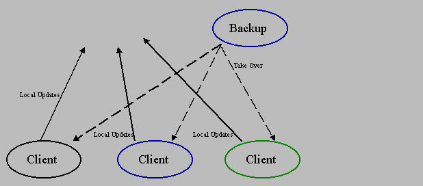
figure 13.
The backup the upgrades its mode to ACTIVE_SINGLE
and stores the sockets it just opened with each client into its internal
data structure. This data structure is detailed in section 4.
It will use these new sockets to communicate game states to the clients.
See figure 14.
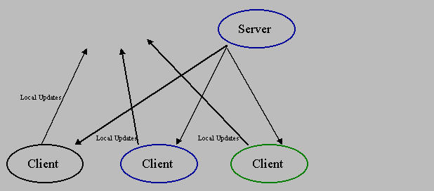
figure 14.
As each client receives a message instructing
it to communicate with a new server, they close the sockets the had opened
with the original server and start sending there updates to the new server.
Normal message passing of state between clients and server resumes at this
point, as in figure 15.
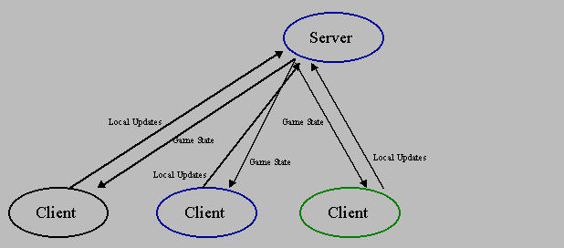
figure 15.
The new server chooses a client to take
over the backup server role. It follows the same procedure described
in section 3.2. Figure 16.
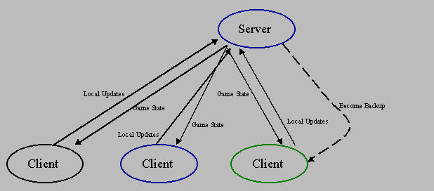
figure 16.
The new backup begins operation as described
in section 3.2. The network has now recovered from the server failure
and is functioning under normal conditions with a new server and backup
server. Figure 17.
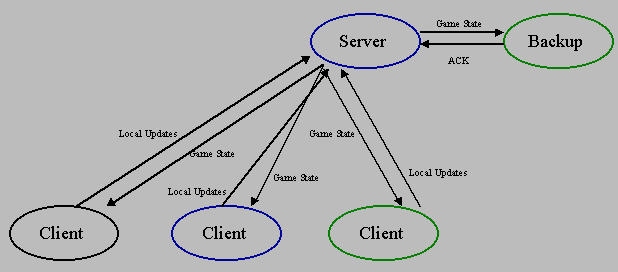
figure 17.
4.0 SYSTEM STATE
The server is the primary agent involved in
maintaining consistent game state. It receives state clients from
each client and creates a merged game state for the entire game environment.
This is then relayed to the clients and to the backup. This game
state includes an entry for each active player. Section 3.1 described
how the server determines the set of active clients. The game simulators
rely on these periodic update of this list to know whom to simulate and
display.
4.1 State in Server
The server maintains game state in the following
data structure. Figure 18 shows this structure with five entries
representing clients or players.
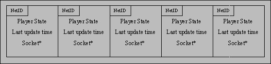
figure 18.
NetID is a combination of IP address
and port number. This value is sent by the client as part of the
JOIN message. It uniquely identifies each game client and is used
as an index into the data structure. The IP and port of the NetID
is crucial to the role of the backup server. They identify a listening
socket each client opens that listens for two important messages, BECOME_BACKUP
and TAKE_OVER. Since this data structure is replicated in the backup
server, this is the mechanism that allows the backup to know how to contact
each client when it must take over as server.
Player State is the state of each
individual player, as sent by the clients. The server never examines
the contents of the Player State, making this design adaptable for
other networked games. For Dueling Teapots, the Player State
includes position and direction of the teapot and any shots fired by that
player. Each time the server receives a new Player State from
the client, the time of receipt is recorded in Last Update Time.
This is used to calculate time-out of the clients.
Finally, each entry includes a socket address
for each client. When the server accepts a connection from a client
and receives a JOIN message, the server does not close the socket.
It stores the socket address in the data structure and uses it to receive
player state updates and to send back complete game state packets to clients.
At set intervals, the server will extract
the NetID and Player State structure from each record and
put them into a single packet. This game state packet will include
the most recent data on each client and will be sent to each client and
the backup server. Each client object will then pass this packet
on to the game simulator for processing and rendering.
The data structure does not buffer all
data from the clients. At any time it stores only the most recent
Player State received. If two player states arrive very close
together, the second may overwrite the first before it can be relayed to
all the other clients. This potential loss of state packets is not
important as the game simulation is only interested in the most up-to-date
player status.
4.2 STATE WARPING
It is desirable to have a fluid display of
the game state. We are transmitting the locations and orientations of several
objects. In addition, we send the velocity of each of these components
so that their position in the future can be extrapolated. We expect a client
to be rendering data which is at least partially out of date.
If we rendered positions alone, each remote
player would appear to be very lagged. By extrapolating the current position
we may render a reasonable estimate of their current position, even though
we do not know that for certain yet. This extrapolation process, however,
can yield discontinuous movement.
When extrapolating the position of a player,
we render a position some distance from their last known location. If we
then receive an update for their orientation which has turned that extrapolated
position will jump dramatically. The top of the figure below illustrates
the path rendered over time using this simple approach.
The solid black circles indicate position
and orientation at the time given by the number. The red circles illustrate
the extrapolated position at a time equal to the number in the circle.
The light blue path indicates the apparent path the object would take.
The dashed portion of the path indicates an instantaneous jump from one
position to another.
The situation illustrated shows data being
received every 1 second with a 1 second delay from it's creation. The data
created at second 2 is not received until time 3. The object is rendered
from second 2 to 3 as moving along the extrapolated path from the data
created at time 1. Then a position and orientation are received from time
2. The new extrapolated position causes the object to jump instantaneously
(the dashed line). It is then moved along data 2's direction to time 4.
See figure 19.
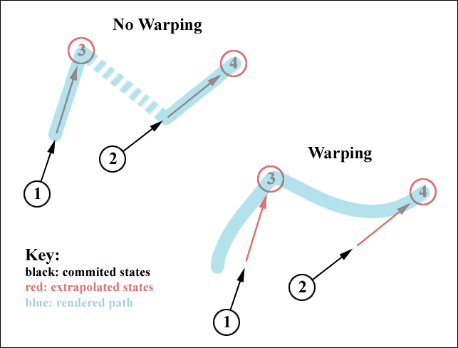
figure 19.
A technique called warping can be used
to remove these unsightly instantaneous jumps. In effect, the extrapolated
position is filtered. The lower portion of the figure illustrates the path
of warped data.
Warping is accomplished by maintaining
a current "warped" state of the world. For every frame that is rendered
this warped version of the world is updated in such a way that it approaches
the extrapolated version of the last received data.
At each frame the most up to date committed
data received from other players is extrapolated to estimate their current
position. The warped version of the data is also extrapolated to with it's
own velocities. Then a linear combination of the two are computed and stored
back to the warped state. This warped state is saved.
The linear combination used is very simple.
W = F*W + (1-F)*G; where W is the warped state, G is the goal state, and
F is the warping factor. A value of 0 for F is equivalent to not using
warping at all.
5.0 DESCRIPTION OF PROTOCOLS
Essentially there are three different protocols:
Server and Client, Server and Backup, Server and Directory Server.
Each protocol uses a small number of fixed length packets to simplify parsing.
The only variable length packet is the complete game state that the server
send to clients. This will vary in length depending on the number
of players. All massages are defined as C++ structures and sent in
binary format.
5.1 Communication between Game Clients and
the Game Server
The protocol begins when the client sends
a JOIN message to the server. The format is below and includes a
time stamp and NetID object identifying the client:
const int JOIN = 101;
struct joinMessage{
int msg;
Time time;
NetID netid;
joinMessage() : msg(JOIN) {}
};
The server uses this data to create a record
in its internal data structure. The server responds with an ACK message
which is identical in structure to the join message except that the netid
field is not used:
const int ACK = 102;
struct ackMessage{
int msg;
Time time;
NetID netid;
ackMessage() : msg(ACK) {}
};
The client now at period intervals begins
to send state update messages:
const int STATEC = 201;
struct stateMessage{
int msg;
Time time;
NetID netid;
PlayerState state;
stateMessage(void) : msg(STATEC)
{}
};
The server will occasionally send a sequence
of stateMessage packets to the clients. These are placed in contiguous
memory and sent as one large packet. The sequence is terminated by
a endMessage structure. These are shown below. The netid field
in the state is not used in the first structure and only the msg field
is used in the second.
const int STATES = 201;
struct stateMessage{
int msg;
Time time;
NetID netid;
PlayerState state;
stateMessage(void) : msg(STATES)
{}
};
const int STATEEND = 202;
struct endMessage{
int msg;
Time time;
NetID netid;
PlayerState state;
endMessage(void) : msg(STATEEND)
{}
};
The protocol also defined a time-out period
for the receipt of state messages at both the client and server ends.
The server-client protocol also defines
two other messages that a server may send a client. These deal with
backup duties.
const int TAKEOVER = 203;
struct takeoverMessage{
int msg;
Time time;
NetID netid;
takeoverMessage(void) : msg(TAKEOVER)
{}
};
const int BACKUP = 204;
struct becomeBackupMessage{
int msg;
Time time;
NetID netid;
becomeBackupMessage(void) : msg(TAKEOVER)
{}
};
The clients appropriate responses to these
are described in section 3.
5.2 Communication between the Main Server
and the Backup Server
This protocol is tightly connected to the
server-client protocol above. At set intervals, the server will send
to the backup, if one is running, a stateMessage to the backup. The
definition is the same as given in section 5.1. The backup will respond
with an ackMessage, again defined as above. Each has a time-out.
When the primary server times out it then sends out a takeoverMessage,
as defined above, message to some client instructing it take over the backup
role. When the backup times-out, it must notify all the clients that
it is now the primary server.
5.3 Communication between the Directory Clients
and the Directory Server
The communication between the directory server
and the directory clients is based on messages with the following structure:
struct DirMessage
{
int mid;
int gameid;
char host[4];
int port;
};
Where the message ID can be one of: LAST_MESSAGE,
GET_ALL_SERVERS, GET_THIS_SERVER, ADD_SERVER, CHANGE_SERVER, ARE_YOU_ALIVE,
YES_I_AM. The directory client sends a request of type GET_ALL_SERVERS,
GET_THIS_SERVER, ADD_SERVER or CHANGE_SERVER to a listening socket of the
directory server, and this one responds acknowledging after successful
completion. In the special case of GET_ALL_SERVERS, it will return a list
of messages ending with LAST_MESSAGE, one for each of the existing games.
The directory server sends ARE_YOU_ALIVE
messages to directory clients of game servers on a fixed time basis. If
it receives a YES_I_AM, that particular server will be considered to remain
alive.
6.0 DESCRIPTION OF PROBLEMS
ENCOUNTERED
During the development of the project we had
to make several important decisions that are reflected in the final design
of the system. These decisions were made trying to maximize the properties
of scalability of the system, availability and consistency. We have grouped
the design decisions under the following categories:
- General structure of the system.
- Definition of state and state maintenance.
- Low level implementation of the communication.
At the end of this section we analyze the
data transfer between game server and client during the normal execution
of the game.
6.1 General Structure of the System
Scalability of the System
In order to make the whole system scalable,
we needed to handle arbitrary numbers of players. In the final implementation
of the system, this is only possible if the players are distributed into
different games. Having a directory server that communicates with the game
servers makes the distribution of games transparent to the user.
We considered the possibility of making
each game scalable too, but we could not implement anything in that direction
given the time constraints. Every game server could redistribute partial
state updates to clients, depending on their spatial distribution. The
game scenario could be partitioned, and each player would only need to
know about the players that are in its same partition. This would substantially
reduce the traffic load on the network.
Availability
The availability of the game servers is
reinforced using the backup servers, as explained in section 3. Moreover,
any player can play the role of server.
This was a very important point in the
design process. We wanted a game were anybody could enter or leave the
game freely.
However, problems with availability may
arise due to two reasons:
1) No protections are implemented for
the directory server.
2) Games can end if the main server and
the backup server quit before the backup took over or if the network is
partitioned and they are in the same partition.
6.2 Definition of State and State Maintenance
Consistency
The eventual definition of the state and
how it is maintained is described in section 4, and it was adopted mainly
for consistency issues. During the design we evaluated other approaches
for defining the state of the game, but we rejected them because they might
bring inconsistency problems.
We wanted to minimize the data flow between
server and clients, sending a minimal state from the server to the clients.
In this situation, clients would have to keep a local version of the state,
and they would have to decide what players were still in the game and which
not. However, we decided that it could bring inconsistencies, because different
clients could compute different local states, particularly painful if they
'killed' each other in their local version of the state of the game. Therefore,
we decided to update the state only at the game server. The 'decision making'
is entitled to one of the processes.
6.3 Low Level Implementation of the Communication
The first dichotomy in the design process
showed up in the election of the transport level protocol. Most of the
commercial network games use UDP and implement their own 'retry' policy.
For the sake of simplicity, we decided to use TCP in our implementation.
In order to minimize the lag due to communications,
all the messages have a predefined length, and the different processes
know at all times the length of the messages that they are supposed to
read. No two messages with different length are sent through the same socket.
Finally, one of the most problematic decisions
was related to the time-outs that would be hard coded in the communication
routines. We decided to set loops of 100 ms for the threads that would
receive state updates (both on the server and the client), and 40 ms for
the threads that would send state updates (both on the server and the client).
We realized that these frequencies could be handled by the application,
but it might run into problems with higher frequencies.
Also the time-outs and frequencies for
the rest of the communications had to be tuned, but they were not as crucial
as the client server communication. In general, they all ran at lower frequencies.
The next subsection analyzes the data transfer
between server and client.
6.4 Data Transfer Analysis
We have studied the time it takes data to
flow through our system. In an interactive game, the time between a player
taking an action and the time it is apparent to others is critical. We
have achieved an average of 0.3 second delay. This is longer than desired.
In this section we discuss the performance of our system.
To study the time it takes data to be passed
through our system we have recorded the age of data packets as they reach
each part of our system. Below is a chart displaying the age of data passing
through each stage of our pipeline. Each series of data represents one
point in the system pipeline:
-
client send: The data has been written to
the socket from a player's game client to the server.
-
server receive: The data has been received
by the server from a game client.
-
server send: The data has been bundled and
sent from the server to the game clients.
-
client receive: The client has received data
from the server.
-
client graphics: The client has rendered a
frame of the game using the data.
The chart below, figure 20, displays data
captured for over one second of time. The horizontal axis is the current
time. Each data point on a series represents one measurement of data age.
These samplings are approximately one second apart. The height of a data
point represents the age of the data at that point.
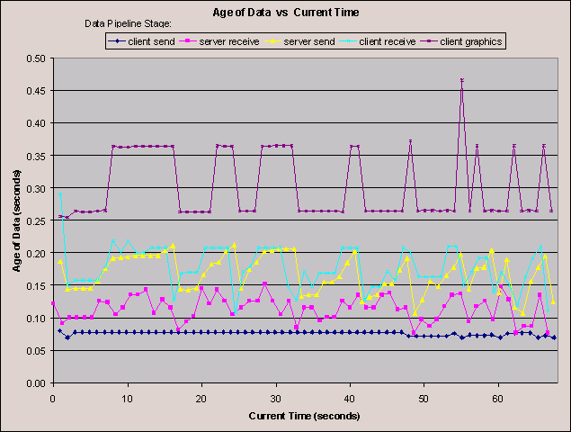
figure 20.
First we note a significant delay before
the data is released from a game client. This number is roughly around
80 ms. We note that this time may be related to the way we restrict the
transmission rate for the game client. The thread which transmits data
has a 100 ms sleep imposed. We did this because sending data at a faster
rate overloaded the server. However, the data should be updated by the
local user's actions constantly. We did not intend this sleep to merely
delay the time data is transmitted, only the frequency. While the transmission
thread is sleeping data should be able to be updated. This is likely an
implementation error on our part.
The server receives data from a client
in a reasonable amount of time, roughly 40 ms.
The delay between a server receiving and
sending data is largely due to a limited send rate on the server. For the
same reason, when limited the transmission rate of the client, we found
we had to limit the transmission rate of the server.
Receiving data from the server by the client
takes very little time. This is reasonable because the client has no other
incoming traffic.
There is a substantial delay between receiving
data and displaying it on the screen. We also note that the display rate
occurs at approximately 10 frames per second, and thus the display time
of data occurs at specific intervals. This is apparent in the stepping,
or square function, appearance of the client graphics data series.
It is likely that our client uses too many
threads and processes data after too many iterations. For example, transferring
data read from a socket is accomplished on alternating cycles from the
display routine. Thus in one iteration the data is gathered, and the next
it is displayed. When implementing this portion we choose to keep the display
and network action disjoint. We also chose to minimize the computational
cost of the display routine, which is why we chose to avoid waiting on
a mutex for network data at this point.
In summary: the network transmission times
appear quite low, however several portions of the client take far too much
time. Even the server application may take longer than necessary to retransmit
data. |